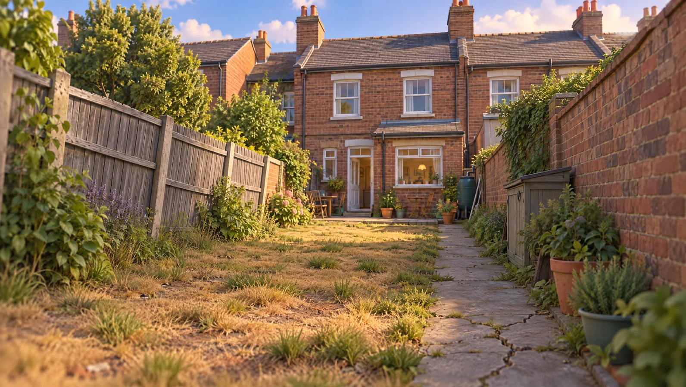
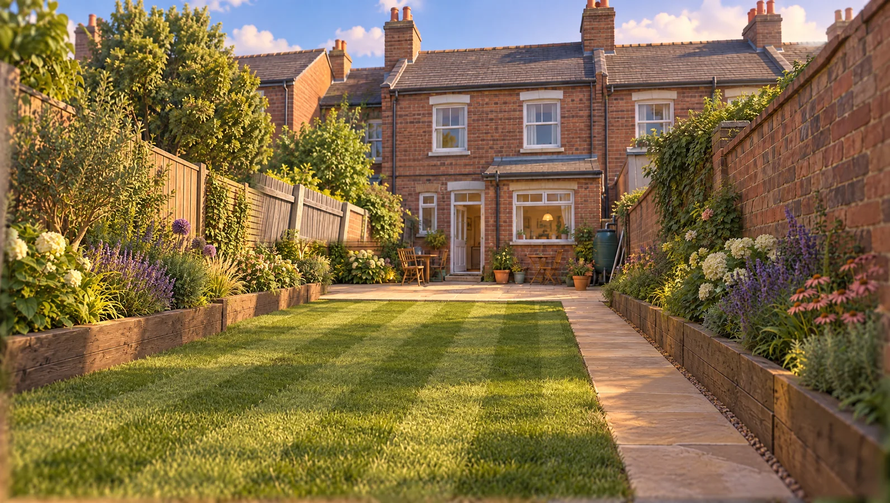

Landscaping in Swindon, sorted.
Gardens built on proper groundwork, so the patio stays level and the lawn stays green.
Hi! We're Jamie and the JK team, and we look after homes around Swindon.


BeforeThis garden needs some love. Tap to see it done.
Tap a job and I'll tell you about it.
Each one has its own page with what's included, guide prices and the questions people ask.
Pick any job above. I'll give you the short version and a guide price.
Build your price with me.
Three quick steps. It's a guide range, the free survey turns it into a fixed written quote.
1 · Pick the garden
2 · How much?
3 · Anything else?
Skip and digger shared if you add fencing or beds: 5% off the extras when you add two or more.

Pick an option and I'll add it up as you go.
Includes our minimum charge for a job this size.
Guide price, confirmed after a free survey. Includes clearance, groundwork, materials and a tidy finish. Levels, access and soil can move it.
Text me this priceFrom hello to handover.
No hard sell. You already have a guide price, the survey fixes it in writing.

- Garden visit
We walk the garden with you, measure up, check levels and drainage, and talk through how you want to use the space.
- Design and written quote
You get a simple plan and a fixed written price, with materials, groundwork and waste removal listed clearly.
- Groundwork
We clear the area, dig out, set levels and build the bases, footings and drainage everything else depends on.
- Build and finish
Patios, lawns, fences, decks and walls go in, then the garden is tidied, swept and cleared of waste.
- Handover and aftercare
We walk round with you, explain any aftercare for turf, timber or planting, and confirm your guarantee in writing.
Do you offer free quotes?
Yes. We visit, measure the garden, talk through what you want and give you a fixed written price. If you already have a design, we will quote from that; if not, we will sketch out options with you.
Do you take a deposit?
For larger jobs we may ask for a modest deposit to order materials, with the balance due when the work is complete and you are happy. We never ask for full payment upfront, and all payments are set out in the quote.
Are you insured?
Yes, we carry public liability insurance and are happy to show you the certificate before we start. It is worth asking any landscaper for proof of cover.
How much mess will there be?
Landscaping means digging, so expect soil, machinery and a skip or grab lorry for a few days. We protect paths and lawns we are not working on, tidy up every evening and leave the garden clean at the end.
Can you work in winter?
Most hard landscaping, fencing and walls can be done all year, apart from frosts that affect mortar and concrete. Turfing and planting are best in autumn and spring. We will suggest the best timing for each part of your job.
Do I need planning permission?
Most garden work does not need permission. Exceptions include fences and walls over 2 m, or over 1 m next to a road, decking or platforms over 30 cm high, and impermeable front gardens over 5 m². Listed buildings and conservation areas have extra rules.